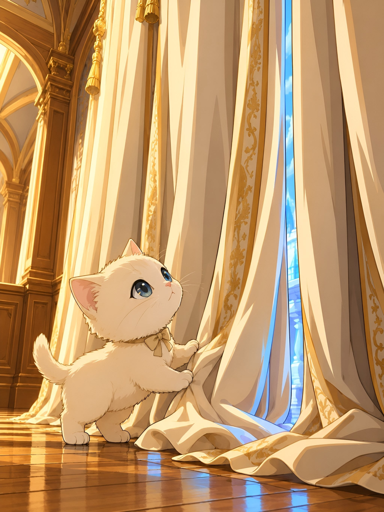

After the glow on the floor had transformed him, Hoshiko carried that first wonder with him through the vast rooms of Hinodegawa. He had learned that magic lived in stillness, in the patience to witness. But the household had more to teach him.
It was the curtains that called to him next.
Tall draped curtains reached from floor to ceiling—cream and gold fabric hanging like sleeping giants. He had watched them from afar for days, studying how the soft gold light caught their edges, how the fabric seemed to breathe with the gentle winds that moved through Hinodegawa's rooms. There was something alive in them. Something that spoke in a language he was beginning to understand.
One afternoon, as the warm light pooled in that particular way—the way that now meant magic to him—his tiny paws carried him forward.
The fabric was softer than anything he had touched. Not hard wood. Not cool crystal. But yielding and warm and alive. His small pink nose brushed the edge, and he trembled with the magnitude of it. His gray-blue eyes widened.
For a long moment, he simply stood before it. On all four legs. Head tilted upward. Watching the way the light moved through the translucent weave, the way crystal-blue refractions danced at the folds.
Then, with the gentleness that had become his signature, he reached forward with one soft cream paw and touched the fabric.
The curtain yielded to him.

It parted—just slightly, just enough—and something extraordinary happened. Light poured through the gap. Not the familiar warm gold of the interior. This was different. This was crystal-blue. Bright and dancing and alive with a different kind of magic.
His entire body froze. His whiskers trembled.
Beyond the curtain lay something vast. The world outside. Soft gold sunlight streamed through tall windows. Crystal-blue refractions danced across the noble room where he stood. The light touched everything—the wooden floors, the cream fabrics, his own tiny cream fur. For the first time, he understood that the home was not the whole world. That beyond these warm, enchanted walls lay something larger still.
But he did not rush forward to escape. That was not who he had become.
Instead, he gently pushed deeper into the fabric—not to leave, but to understand. To feel how soft strength could open new rooms. To discover that curiosity rewarded the brave. To learn that the threshold between worlds was not something to fear, but something to explore with an open heart.
The light grew brighter. The crystal-blue refractions multiplied around him, painting his cream fur in shades of blue and gold. He tilted his head upward, and his gray-blue eyes reflected the light like twin moons reflecting the sky.
In that moment, he understood something deeper than the magic of the floor.
He understood that gentleness is a form of courage. That softness and strength are not opposites—they are partners. That the smallest touch, the most delicate paw, the most patient heart, can open doors to worlds beyond imagining.
The curtain settled around him, a gentle frame.
And Hoshiko stood at the threshold—tiny, brave, and utterly transformed by the knowledge that he was brave enough to be gentle.